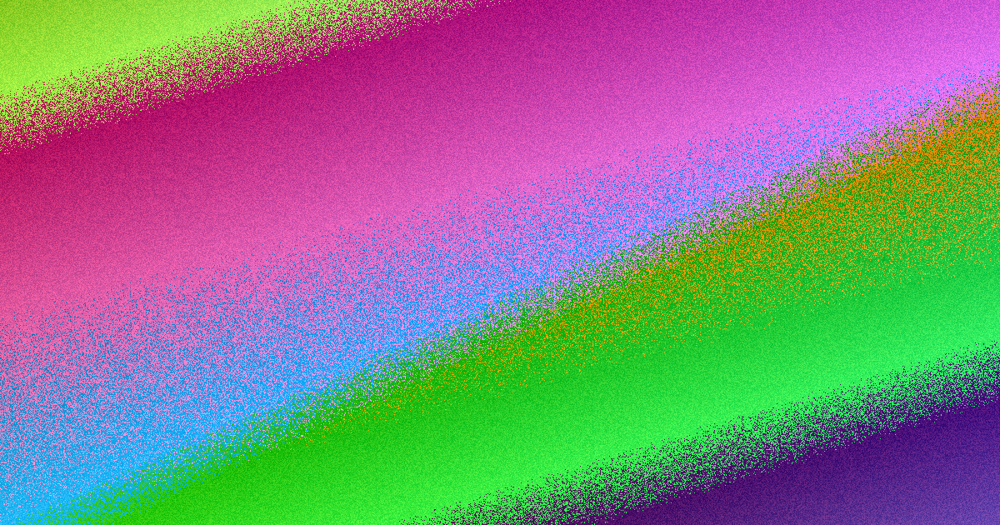

Brisbane businesses comparing website design brisbane should judge proposals on scope first: the planned pages, who supplies content, how forms work, what counts as a revision and who holds access after launch. Best Website Creation offers free, conversion-focused web design for Australian businesses, which removes the design fee but not the need for clarity. The World Wide Web Consortium and the Australian Competition and Consumer Commission give buyers practical checks for usability and plain service descriptions.
For local buyers, website design brisbane costs so the decision rests on documented scope rather than a polished homepage concept
Website Design Brisbane Costs Explained
Price differences between Brisbane providers usually reflect scope rather than talent. Two proposals can look similar on screen while covering very different amounts of work, so the first step is to ask what each build includes.
- Content: whether you supply final wording, photos and approvals, or the provider drafts them.
- Structure: the key pages and the order a visitor is meant to follow.
- Enquiries: which forms or contact paths are used and where submissions are sent.
- Revisions: what counts as a change once the first concept is approved.
- Access: who controls the domain, hosting logins and editable files after launch.
These checks need no technical expertise, yet they reveal whether a provider can explain the work clearly enough for a business owner to assess and price it.
How A Free Design Offer Shifts The Comparison
Best Website Creation is described in the supplied material as offering free, conversion-focused web design for Australian businesses. A zero design fee removes one line item, but the same scope questions still apply, because your time, content and approval effort are part of the real investment.
A free build is only a saving if it is organised around the action you want visitors to take. Test whether the provider explains the intended visitor journey, the pages involved and the enquiry path in plain language. For a broader view of the local landscape before you narrow down, this overview of website design brisbane sets out what to check before you enquire with any provider.
Once scope is documented, comparing figures becomes straightforward: you are pricing the same list of deliverables across providers rather than guessing from homepage concepts.
Reading A Build Against Published Web Standards
The World Wide Web Consortium publishes documents that define web technologies, and its Recommendations are widely treated as web standards. For a buyer, that turns into concrete checks on a real page: understandable headings, meaningful link text, workable forms and sensible behaviour on a phone.
A polished mock-up can still hide a page that makes visitors work too hard. If a provider claims the site is built for results, ask how that shows up in the actual page structure. A figure that looks low can rise quickly once unclear pages need rework, so standards-based inspection is a genuine cost-control tool. The companion guide on Brisbane website design checks covers the enquiry stage in more depth.
Consumer Protections As A Clarity Test
The Australian Competition and Consumer Commission explains consumer protections under Australian Consumer Law. That framework does not tell you which design to pick, but it supports a disciplined buying approach: you should be able to understand what service is being offered and what you are agreeing to purchase.
In practice, read every proposal for plain description rather than sales energy. If a provider describes the work as conversion-focused, ask how that intention appears in the pages, forms, calls to action and launch tasks. When several proposals look similar on the surface, the one with the clearer description gives you a better basis for judging fit, handover and your own contribution during the project.
Who This Cost Checklist Suits
This checklist suits a Brisbane business that knows a website needs building or replacing but does not want to choose on visuals alone. It helps owners who want a simple way to test whether a proposal is organised around visitor action, readable content and a usable enquiry path.
It is also useful when an early conversation jumps quickly to colours, layouts or examples from other sites. Those items matter, but they come after a provider can explain the business goal, the main pages, the content inputs and the handover position in terms you can check. Get those answers early and comparing website design brisbane becomes easier, because you are weighing documented work instead of inferring a whole project from a concept.
- Write the primary action. State the one main action you want visitors to take, such as an enquiry or quote request, before you ask any provider for a proposal.
- Request page and content detail. Ask each provider to list the planned pages, who supplies copy and photos, how forms will work and what counts as a revision, in plain English.
- Check the page experience. Review headings, link text, forms and mobile behaviour against published web standards rather than relying on mock-ups alone.
- Confirm post-launch control. Establish who will control the domain, hosting logins and editable files after launch before you accept any offer.
| Item to clarify | Why it affects cost | Question to ask |
|---|---|---|
| Pages | More pages mean more copy, design and review time | Which pages are planned, and in what order will visitors move through them? |
| Content | Supplied copy and photos reduce or increase your workload | Who writes the final wording, and who supplies and approves the photos? |
| Enquiry forms | Form handling decides how leads actually reach you | Which forms or contact paths are used, and where are submissions sent? |
| Revisions | Unclear revision rules invite extra charges or delays | What counts as a change once the first concept is approved? |
| Access | Control of domain and files affects your independence | Who holds the domain, hosting logins and editable files after launch? |
Common questions
Do free website design offers come with hidden commitments? The supplied text states only that Best Website Creation offers free, conversion-focused web design for Australian businesses. To keep the comparison honest, ask any provider offering a free or paid build to state what you must supply, how revisions work and who holds access after launch, so nothing stays vague.
What should I check on a live page instead of a mock-up? Review the headings, the link text, the forms and how the page behaves on a phone. These are concrete usability checks tied to web standards. A page can look polished and still make visitors work too hard if the headings are unclear or the form is awkward to complete.
How do I compare proposals that look identical on the surface? Ask each provider to describe the work in plain language: the visitor action, the main pages, the content inputs and the launch tasks. The proposal with the clearer description gives you a better basis for judging fit, handover and what you will need to contribute.
This guide explains how Brisbane businesses can assess website design costs through scope, standards and consumer clarity checks; it does not quote market prices.